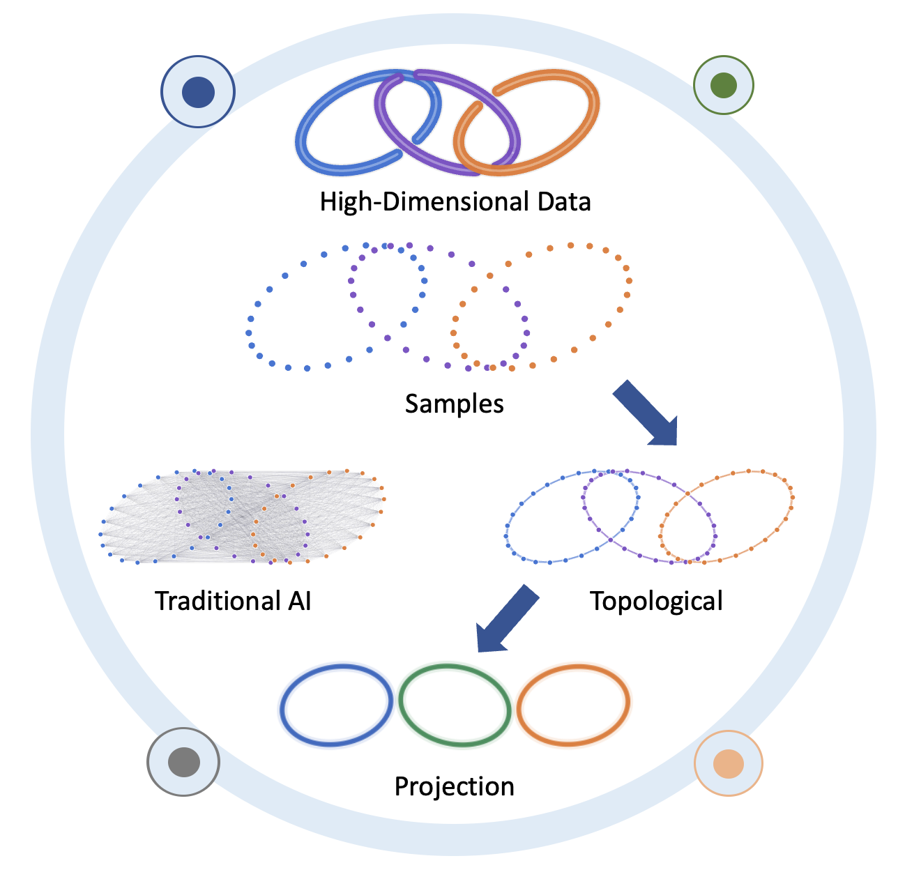
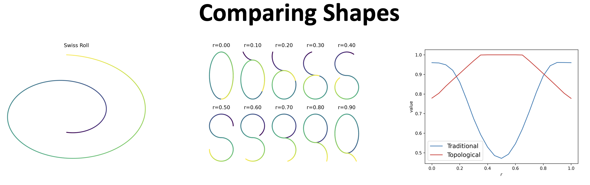
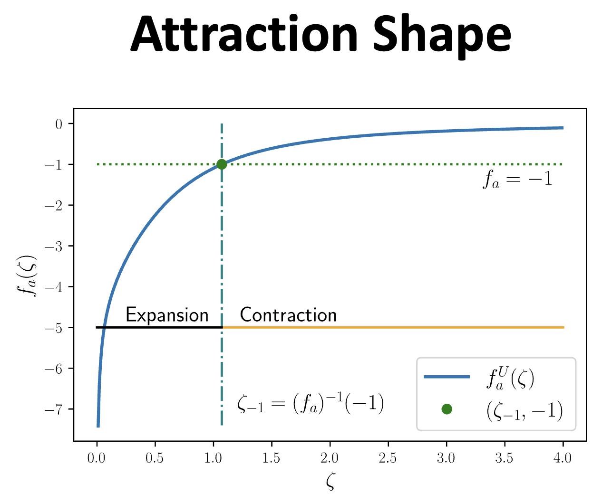
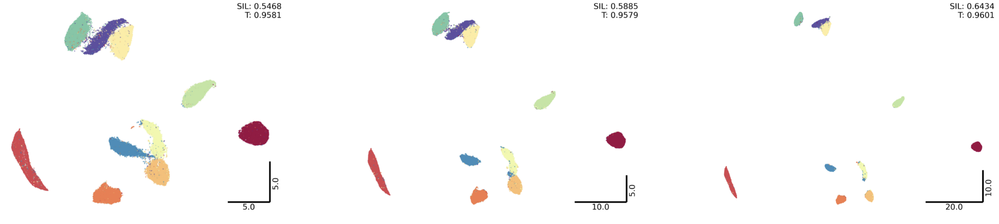
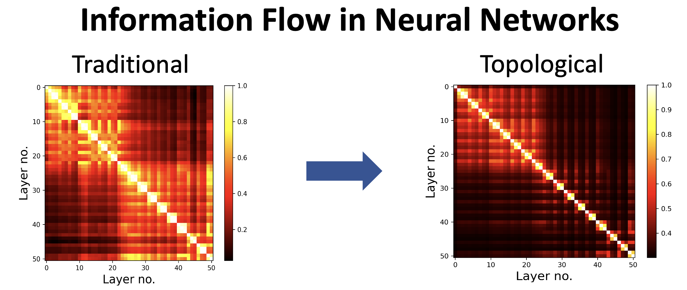
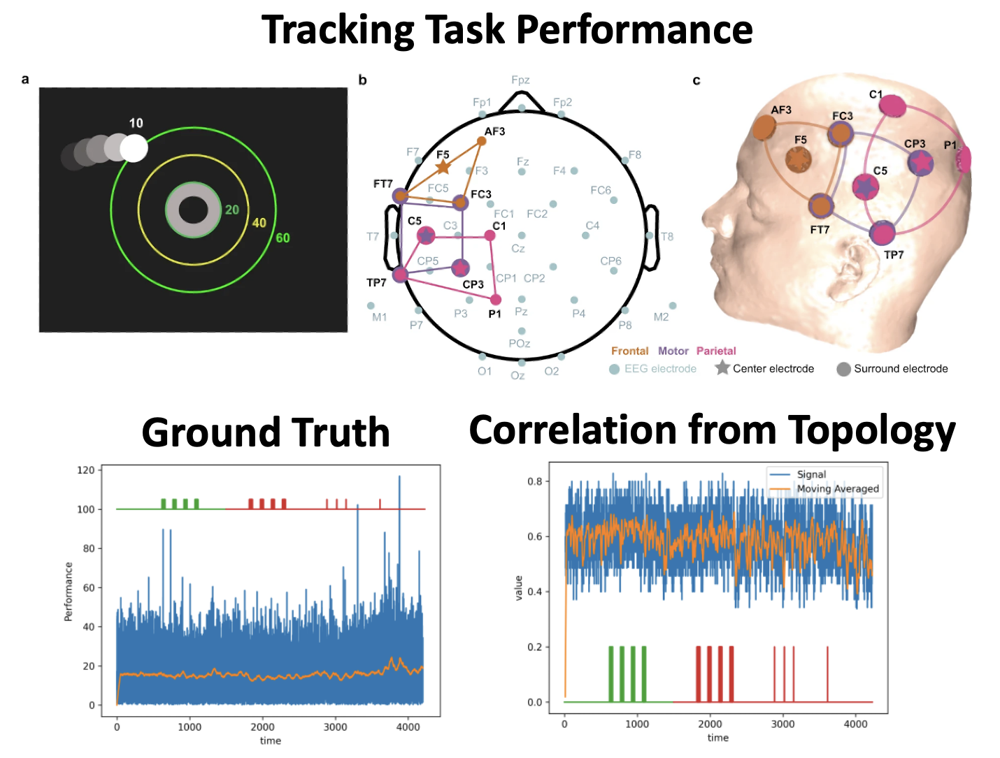
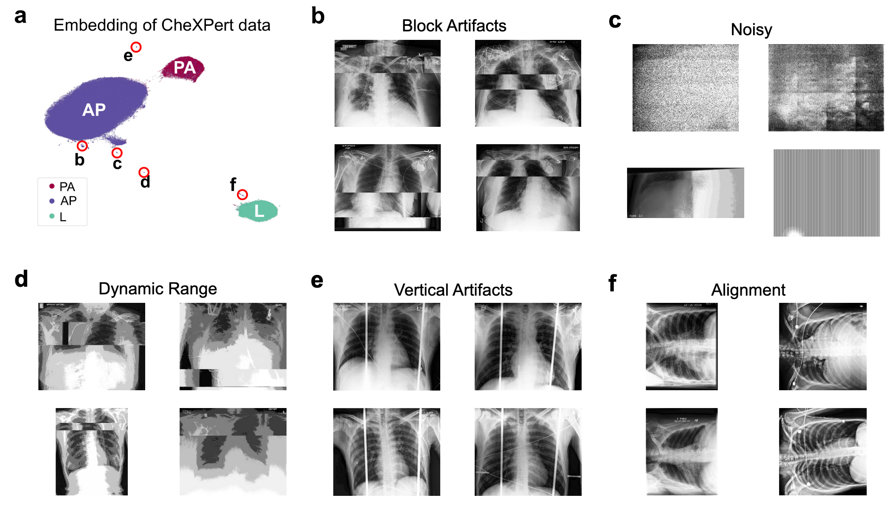

Insight Showcase
Exploring how modern mathematical tools shape the analysis, interpretation, and application of biosignal data.

The central idea is the Manifold Hypothesis, which posits that high-dimensional biosignal data lie on a lower-dimensional manifold, allowing for more efficient analysis and interpretation.
Standard techniques in machine learning often fail to capture the intrinsic structure of such data, leading to suboptimal performance in tasks like classification and clustering. Nevertheless, in classification tasks, standard machine learning (ML) methods can use brute-force to learn the manifold. However, for clustering, the manifold structure is crucial to identify meaningful groupings in the data. A typical ML appraoch often fails to capture this. A topological approach, on the other hand, can leverage the manifold structure to extract more meaningful features and improve performance in both classification and clustering tasks.
Our approach: Sparse K-NN graph to extract topological structure of the data.

We comapre two classic shapes: Swiss-roll (left) and S-curve (middle, r = 0.5). Although the Swiss roll and the S-curve look drastically different, they are topologically equivalent: both lie on a one-dimensional nonlinear manifold. Fur- thermore, the parameter r in the S-curve can give it dif- ferent shapes (middle). A color map shows the correspondence among the shapes. For r < 0.4 and r > 0.6, the colors overlap, and the 1-D manifold disappears.
Traditional approach shows highest similarity when r=0, a case where S curve folds on top of itself. In contrast, our topological approach shows highest similarity when r=0.5, a case where S curve is most similar to the Swiss roll.

The attraction shape visualizes how UMAP’s attractive force behaves with pairwise low-dimensional distance.
For distances smaller than the critical value, the effective attraction can become expansive, which explains why learning rate annealing is required to stabilize the embedding and avoid fuzzy clusters. In contrast, distances above the threshold contract, allowing the method to preserve local neighborhood structure while still revealing global manifold shape.

The figure illustrates how varying the attraction and repulsion shapes controls cluster granularity in the low-dimensional embedding. By adjusting these forces, we can create projections that emphasize either broader cluster groupings or finer substructure while maintaining the underlying manifold topology.

The figure compares inter-layer information flow computed from layer activations. The traditional pipeline produces diffuse similarities across layers, while our topology-informed pipeline yields a clearer diagonal structure, indicating more localized, stable transformations across the network depth. This suggests improved interpretability and reduced spurious correlations when topology-preserving representations are used. In the illustration we used ResNet-50.


UMAP can discover anomalies by producing small, independent clusters that are distinct from the main dataset but internally consistent with specific error modes. We validated this approach on ChestX-ray14, CheXpert, and MURA — demonstrating that graph-based, topology-preserving embeddings are effective for large-scale dataset curation across data modalities.